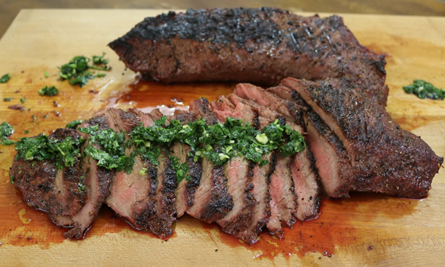

Santa Maria Grilled Tri-Tip Beef

What is Santa Maria Grilled Tri-Tip Beef?
A Santa Maria tri-tip marinade of spices and herbs makes this recipe spectacular.
The town of Santa Maria, California, is home to one of America's most delicious barbecue specialties: black-on-the-outside, pink-on-the-inside, grilled beef tri-tip steak.
The tri-tip is cut from the bottom sirloin and when cooked properly, produces a very flavorful, incredibly juicy piece of beef.
Ingredients
- 1 (2 1/2 pound) beef tri-tip roast
- 2 teaspoons freshly ground black pepper
- 2 teaspoons salt
- 2 teaspoons garlic powder
- 1 ½ teaspoons paprika
- 1 teaspoon onion powder
- 1 teaspoon dried rosemary
- ¼ teaspoon cayenne pepper
- ⅓ cup red wine vinegar
- ⅓ cup vegetable oil
- 4 cloves crushed garlic
- ½ teaspoon Dijon mustard